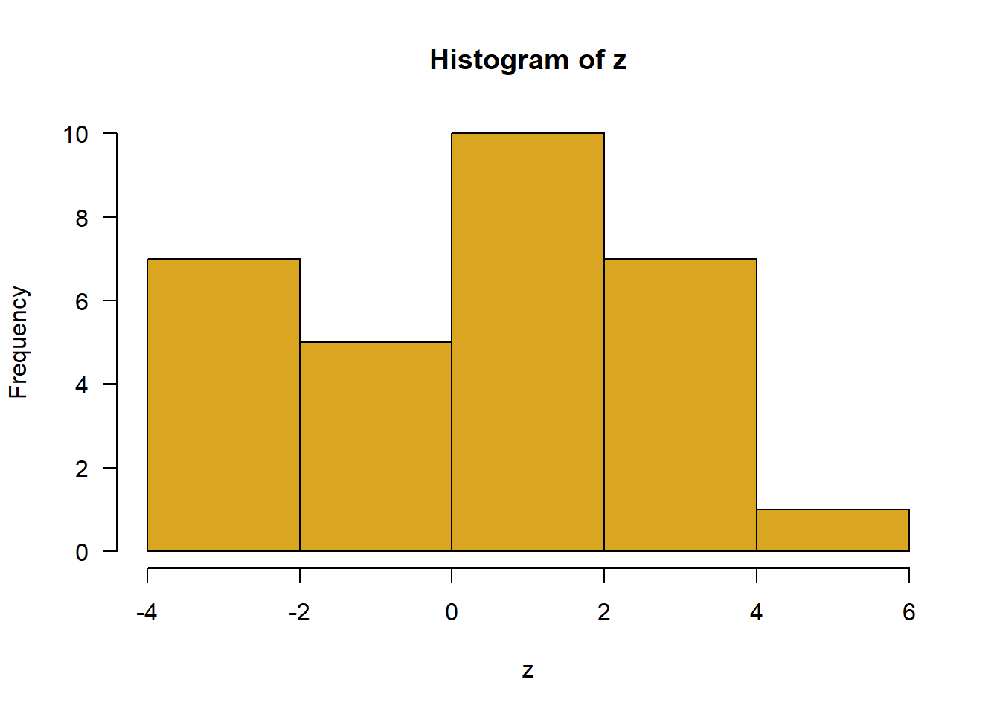

create a good header section and table of contents
save the script file with an informative name
set your working directory
Aim to make the script useful as a future reference for doing things in R - this will come in handy for projects and assessments!
3 Experiment planning tools
Before carrying out a time- and fund-consuming experiment, it is useful to get an idea of what to expect from the results. How big an effect are you expecting? What are the chances that you would detect it? What sample size would you need to have a reasonable chance of succeeding? How narrow a confidence interval around the estimated effect would you be happy with? In this lab we will show how R can be used to address some of these questions.
4 Random sampling warm-up
To begin, let’s get some practice sampling (randomly) categorical and Gaussian-distributed data from a population. The intention is to use sample
Randomly sample 20 observations from a population having two groups of individuals, “infected” and “uninfected”, in equal proportions. Summarize the results in a frequency table.
Repeat the previous step five times to convince yourself that the outcome varies from sample to sample.
Sample 18 individuals from a population having two groups of individuals, “mated” and “unmated”, where the proportion mated in the population is 0.7. Summarize the results in a frequency table.
Repeat the previous step five times to convince yourself that the outcome varies from sample to sample.
Sample 30 observations from a Gaussian-distributed population having mean 0 and standard deviation 2. Plot the results in a histogram.
Repeat the following 5 times and calculate the mean each time: sample 30 observations from a Gaussian-distributed population having mean 0 and standard deviation 2. Convince yourself that the sample mean is different each time.
4.1 Suggested solutions
All lines below beginning with double hashes are R output
# 1.# run this several times in your own script # and see how the output changessample(c("infected","uninfected"), prob =c(.5,.5),size =20, replace =TRUE)
# 3. z <-sample(c("mated","unmated"), size =18, replace =TRUE, prob =c(.7,.3))table(z)
z
mated unmated
14 4
# 5. z <-rnorm(30, mean =0, sd =2)hist(z, right =FALSE, col ="goldenrod", las =1)

# 6. z <-rnorm(1000, mean =0, sd =2)hist(z, right =FALSE, col ="goldenrod", las =1)
5 Plan for precision
Consider an experiment to estimate mate preference of females of a species of jumping spider. Each independent trial involves presenting a female spider with two tethered males. One of the males is from her own species, and the other is from its sister species. To avoid pseudoreplication, females are tested only once and males are replaced between tests. You want to estimate p, the proportion of female spiders that choose males of their own species. Before carrying out the experiment, it is useful to generate data under different scenarios to get a sense of the sample size you would need to estimate preference with sufficient precision.
5.1 Estimate weak or no preference
We’ll start with the case of weak or no preference: Imagine that females choose males essentially randomly (p = 0.5), with half choosing the male from her own species and the other half picking the male of the other species. How much data would you need to demonstrate this (and convince your skeptical supervisory committee)? One idea is to collect data and use it to test the null hypothesis of no preference. If the null hypothesis is true, you should fail to reject it. However, this won’t be very convincing to your committee. Failing to reject a null hypothesis is inconclusive by itself. Maybe your test won’t have much power.
A second idea is to plan your sample size so as to obtain a narrow confidence interval (i.e. having high precision) for the strength of preference. If, at the end of your experiment, you end up with an estimate of p close to 0.5 AND your 95% confidence interval for p is relatively narrow, you’ll be in a strong position to say that the true preference really is weak, even if you can’t say it is exactly 0.5. What sample size is necessary to achieve a reasonably narrow confidence interval in this case? Investigate this question by simulating data.
6 Questions
Randomly sample n = 10 females from a population having equal numbers of “successes” (females who choose males of her own species) and “failures” (females who choose males of the other species). What was the proportion of successes in your sample?
Using the data from step 1, calculate an approximate 95% confidence interval for the population proportion of successes. Use the Agresti-Coull method in the binom package in R, which you will need to install if you haven’t already done so.
To obtain the 95% confidence interval, use the binom.confint function explained below. The argument x is the number of “successes” in your generated sample (number of females who chose males of her own species) and n is the sample size (number of females tested).
# gets the confidence intervaln <-50# number of trialsx <-27# number of successesmyCI <-binom.confint(x, n, method ="ac") print(myCI) # shows the results
method x n mean lower upper
1 agresti-coull 27 50 0.54 0.4039603 0.6703319
myCI$lower # lower limit of confidence interval
[1] 0.4039603
myCI$upper # upper limit
[1] 0.6703319
Obtain the 95% confidence interval for the proportion using your data from step 1. What was the span of your confidence interval (upper limit minus lower limit)? Can you be confident that the true population proportion is 0.5 or very close to it?
Repeat steps 1 and 2 five times and keep a record of the confidence intervals you obtained. What was the lowest value for the span of the confidence interval from the 5 samples?
You can speed up the effort if you create a for loop in R that automatically repeats steps 1 and 2 as many times as you decide. A loop that repeats ten times would look something like the following. The “i” in this loop is a counter, starting at 1 and increasing by 1 each time the commands in the loop are executed. Don’t forget to include a command inside the loop to print each result.
for(i in1:10) {# [paste in your R commands for steps 1 and 2 here]}
Increase the sample size to n = 20 and run the loop from step 4 again. How much narrower are the confidence interval spans? Are the spans adequate?
By modifying the sample size and re-running the loop a bunch of times, find a sample size (ballpark, no need to be exact at this point) that usually produces a confidence interval having a span no greater than 0.2. This would be the span of a confidence interval that had, e.g., a lower limit of 0.4 and an upper limit of 0.6. Surely this would be convincing evidence that the mate preference really was weak.
By this point you might wish to speed things up by saving the results of each iteration to a vector or data frame rather than print the results to the screen. This will make it possible to increase the number of iterations (say, to 100 times instead of just 10) for a given value of n.
Given the results of step 6, you would now have some design options before you. Is the sample size n that your simulation indicated was needed to generate a confidence interval of span 0.2 realistic? In other words, would an experiment with so many female spiders (and so many males) be feasible? If the answer is yes, great, get started on your experiment! If the answer is no, the sample size required is unrealistically large, then you have some decisions to make:
Forget all about doing the experiment. (Consider a thesis based on theory instead.)
Revise your concept of what represents a “narrow” confidence interval. Maybe a confidence interval for p spanning, say, 0.3 to 0.7 (a span of 0.4) would be good enough to allow you to conclude that the preference was “not strong”. This would not require as big a sample size as a narrower interval.
Repeat the above procedures to find a sample size that usually gives a confidence interval having a span of 0.4 or less.
6.1 Suggested solutions
All lines below beginning with double hashes are R output
library(binom)# 1. 10 females from a population having equal numbers # of successes (1) and failures (0)x <-sample(c(1, 0), size =10, c(0.5, 0.5), replace =TRUE)x
## [1] 0.4747451# 5.n <-20# sample size each timenruns <-100# number of runsspan <-vector()for(i in1:nruns){ x <-sample(c(1,0), size = n, c(0.5,0.5), replace =TRUE) myCI <-binom.confint(sum(x), n, method ="ac") span[i] <- myCI$upper - myCI$lower }hist(span, right =FALSE, col ="goldenrod", las =1)
# 6.n <-93# sample size each timenruns <-100# number of runsspan <-vector()for(i in1:nruns){ x <-sample(c(1,0), size = n, c(0.5,0.5), replace =TRUE) myCI <-binom.confint(sum(x), n, method ="ac") span[i] <- myCI$upper - myCI$lower }hist(span, right =FALSE, col ="goldenrod", las =1)
# 8.n <-21# sample size each timenruns <-100# number of runsspan <-vector()for(i in1:nruns){ x <-sample(c(1,0), size = n, c(0.5,0.5), replace =TRUE) myCI <-binom.confint(sum(x), n, method ="ac") span[i] <- myCI$upper - myCI$lower }hist(span, right =FALSE, col ="goldenrod", las =1)
7 Plan for power
Assume that the preference p really is different from 0.5, and use null hypothesis significance testing to detect it. What strength of preference would we like to be able to detect in our experiment? To pick an extreme case, if the true proportion of females in the population choosing a male from her own species is 0.51 rather than 0.50, you would need an enormous sample size to detect it. But we don’t really care about such a small effect. Let’s start instead with the more realistic proportion p = 0.7. What sample size would be needed to detect it with reasonably high probability?
Sample 20 females from a population in which the true fraction of “successes” is 0.7
Apply the binomial test to your sample, to test the null hypothesis that the population proportion is 0.5. The binomial test calculates the exact 2-tailed probability of a result as extreme or more extreme as that observed if the null hypothesis is true. The method is implemented in R in the following command,
# z <- binom.test(x, n, p = 0.5)
where x is the observed number of successes in your sample from step 1, and n is the sample size. z here is an object that stores the result. To see the results of the test enter print(z) or just z in the command line. If you just want to see the resulting P-value of the test, enter this instead:
# z$p.value
Did you reject the null hypothesis?
Create a loop to repeat steps 1 and 2 ten times. In what fraction of iterations was the null hypothesis rejected?
By modifying the sample size and re-running the loop multiple times, find a sample size (ballpark, no need to be exact at this point) that usually results in the null hypothesis being rejected. Compare your results to those from the confidence interval simulation above.
Is the sample size you determined feasible in an experiment? If the answer is yes, great! If the answer is no, because the sample size required is too large, then you have some decisions to make. You could decide not to run the experiment after all. Or, you could revise your aims. Perhaps your committee would be happy if you if you could detect a preference of 0.8 instead of 0.7.
7.1 Suggested solutions
# 1. Sample 20 females from a population in which the true fraction of "successes" is 0.7x <-sample(c("success","failure"), size =20, c(0.7,0.3), replace =TRUE)nsuccess <-length(which(x =="success"))# 2. Apply the binomial testz <-binom.test(nsuccess, 20, 0.5)z$p.value
# 4. Repeating 100 times shows that a sample size of n = 50 females # seems to reject Ho roughly 80% of the timen <-50result <-vector()for(i in1:100){ x <-sample(c("success","failure"), size = n, c(0.7,0.3), replace =TRUE) nsuccess <-length(which(x =="success")) z <-binom.test(nsuccess, n, 0.5) result[i] <- z$p.value }length(which(result <=0.05))/100
[1] 0.79
8 Power tools in R
Simulating random samples on the computer, as we did above, is a great way to investigate power and sample size requirements. It works in any situation and can mimic, even complicated study designs. However, a number of quantitative tools have been developed for mainly simple designs that do the work for you.
8.1 Try the {pwr} package
Load the pwr library and use it to do some of the calculations for you. See the [Sample size and power page here for tips](https://dsgarage.netlify.app/misc-r/04-sample-size-power/.
Use the pwr package to calculate the approximate minimum sample size needed to detect a preference of 0.6 with a power of 0.80 (i.e., the null hypothesis would be rejected in 80% of experiments). The null hypothesis is that the population proportion p of females who would choose the male from her own population is 0.5. The goal is to design an experiment that has a high probability of rejecting the null hypothesis when p is 0.6.
Repeat the above procedure for a preference of 0.7, 0.8, and 0.9.
8.2 Suggested solutions
All lines below beginning with double hashes are R output
# You might need to install {pwr}library(pwr)# 1.h <-ES.h(0.5, 0.6)z <-pwr.p.test(h, power =0.8)z$n
[1] 193.5839
# 2.# Repeat for range values of prefpref <-c(0.6, 0.7, 0.8, 0.9)for(i in1:length(pref)){ h <-ES.h(0.5, pref[i]) z <-pwr.p.test(h, power =0.8)print(z$n)}
In an experiment on the great tit, two eggs were removed from 30 nests, which caused the attending females to lay one more egg. 35 un-manipulated nests served as controls. The response variable was incidence of malaria in female great tits at the end of the experiment. The results of the experiment are tabulated below.
Survivors
Imagine that you are considering repeating this experiment on a different species of songbird. What are the chances of detecting an effect? What sample sizes should you plan?
Randomly sample 30 females from a control population in which the fraction of infected birds is 0.2 (the fraction in the tit data). Sample also 30 females from an experimental population in which the fraction of infected birds is 0.5 (the fraction in the tit data). Combined the samples into a data frame. Include a variable indicating treatment.
Display the 2 x 2 frequency table from your random sample. Is there an association?
Repeat steps 1-3 three times to convince yourself that the answer is different each time.
Using the tools in pwr calculate the sample size needed to achieve 80% power in this design.
9.1 Suggested solutions
All lines below beginning with double hashes are R output
treatment
response control treat
malaria 2 18
no 28 12
# 3. Repeat above# 4. control <-c(0.2,0.8)treatment <-c(0.5,0.5)probs <-cbind.data.frame(treatment = treatment,control = control,stringsAsFactors =FALSE)# Cohen's effect size "w"w <-ES.w2(probs/sum(probs)) z <-pwr.chisq.test(w, df =1, power =0.80)z$N
[1] 79.36072
10 Plan a 2-treatment experiment
Imagine that you are considering a two-treatment experiment for a numeric response variable. The treatments consist of two grazing regimes and the response variable is the number of plant species in plots at the end of the experiment. How many replicate plots should you set up? As usual, we will investigate only the case of equal sample sizes in the two groups.
We’ll assume that the number of plant species in plots has a Gaussian distribution in both treatment and control. We’ll round the numbers so that they are integers.
Randomly sample 20 measurements from a Gaussian distribution having a mean of 10 and a variance of 10 (so the standard deviation is the square root of 10). Call this the “control” group. Let’s round the numbers so that they are integers.
# << YOUR CODE HERE FOR RANDOM SAMPLE# control <- round(control, 0)
Repeat step 1 for a second sample, this time from a Gaussian distribution having a mean of 15 but the same sample variance, 10. (This is a bit unrealistic, as we would expect the variance in numbers of species to be higher as the mean increases, but never mind for now). Call this the “treatment” group. In other words, we will investigate the power of this experiment to detect a 1.5-fold change in the mean number of species from control to treatment.
Assemble the samples into a data frame in “long” format, with a second variable indicating which measurements are from the control group and which are from the treatment group. Create a histogram for each of the two samples and compare the distributions by eye.
Using the power.t.test command in the basic R stats package, determine the power of the above design – probability that the experiment will detect a significant difference between the treatment and control means based on random samples.
Using the same command, determine the sample size that would be necessary to achieve a power of 0.80.
10.1 Suggested solutions
All lines below beginning with double hashes are R output